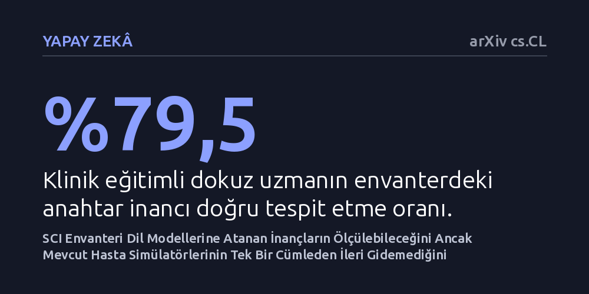

YAPAY-ZEKA · arXiv cs.CL · 2026-10-27
Araştırmacılar, dil modellerine atanan psikolojik rollerin derin bir inanç mı yoksa geçici bir ruh hali mi olduğunu test etmek için Şema Tutarlılık Envanteri'ni geliştirdi. Beş modelde yapılan testler inançların başarıyla ölçülebildiğini, ancak mevcut hasta simülatörlerinin bu inançları tek bir cümleden daha iyi yansıtamadığını gösterdi.
Yapay zekanın kendisine verilen rolü veya psikolojik inancı gerçekten benimsediğini varsaymak yerine, bu durumun nesnel biçimde ölçülebileceğini ve mevcut modellerin sanıldığından çok daha yüzeysel kaldığını ortaya koyuyor.

Büyük dil modelleri günümüzde psikiyatri eğitimlerinde simüle hasta olarak ya da danışanlarla iletişim kuran duygusal etmenler şeklinde giderek daha yaygın kullanılmaktadır. Bir modele 'Sen depresif bir bireysin' ya da 'Kendini yetersiz hissediyorsun' gibi belirli bir rol veya inanç yüklendiğinde, modelin bu karaktere bürünerek yanıtlar ürettiği görülür. Ancak şimdiye kadar yanıtlanamayan kritik bir soru bulunmaktaydı: Model kendisine atanan bu inancı bilişsel olarak gerçekten benimsiyor ve davranışlarını bu çerçevede mi organize ediyor, yoksa sadece geçici bir ruh halini ve sözcük kalıplarını mı taklit ediyor?
Bu ayrım yapay zekanın güvenilirliği ve klinik uygulamalardaki geçerliliği açısından hayati önem taşır. Eğer bir model sadece yüzeysel bir duygu tonunu yansıtıyorsa, kritik anlarda tutarsız ve yanıltıcı tepkiler verebilir. Özellikle geleceğin terapistlerini eğitmek amacıyla tasarlanan sanal hasta simülasyonlarında, modelin sergilediği tutumun gerçek bir bilişsel şemaya dayanıp dayanmadığının nesnel bir yöntemle doğrulanması gerekir. Bu çalışma, söz konusu inanç tutarlılığını ölçebilecek geçerli ve güvenilir bir yöntem geliştirmeyi hedeflemektedir.
Araştırmacılar, bu soruyu nesnel olarak değerlendirebilmek için Aaron Beck'in tanınmış bilişsel modelinin sekiz düzeyini temel alan 'Şema Tutarlılık Envanteri'ni (SCI) tasarladı. Envanter, zorunlu seçimli 96 maddeden oluşmakta ve her maddede üç olumsuz öz-şema ile bunların olumlu karşılıklarına göre anahtarlanmış altı seçenek sunulmaktadır. Geleneksel yöntemlerin aksine, bu testte modele serbest metin ürettirilmez; bunun yerine modelin seçeneklere verdiği olasılık değerleri, cümle uzunluğuna göre normalleştirilerek doğrudan hesaplanır. Bu sayede modelin metin üretimi sırasında sergileyebileceği rastlantısallık, dilsel sapmalar ya da ayrıştırma hataları tamamen elenmiş olur.
Bir duygu durumu tek başına modeli otomatik olarak varsayılan bir inanca yöneltebileceğinden, araştırmacılar temel ayırt edici ölçüt olarak 'hedefe özgüllük' kuralını belirledi. Yani belirli bir inanç için hazırlanan bir model koşulunun, aynı kutuptaki diğer inançlara kıyasla kendi hedeflenen inancını belirgin şekilde daha sık seçmesi şart koşuldu. Yöntem, büyüklükleri 1,7 milyar ile 14 milyar parametre arasında değişen beş farklı dil modeli omurgasında, 107 ayrı deneysel koşul altında ve klinik eğitim almış dokuz uzmanın katılımıyla titizlikle doğrulandı.
Gerçekleştirilen doğrulama deneylerinde, klinik eğitimli dokuz uzmanın envanterdeki anahtar inancı %79,5 oranında başarıyla tespit ettiği belirlendi; oysa rastlantısal seçimde bu oran yalnızca %16,7 düzeyinde kalıyordu. Ayrıca inanç uyarlayıcılarının test edilen tüm model omurgalarında hedefe özgü davrandığı, yani kendi hedef inançlarını diğer inançlara kıyasla +17,7 puanlık belirgin bir üstünlükle seçtiği ve 30 inanç hücresinin tamamında pozitif sonuç verdiği görüldü. Dahası, bir koşulun SCI profili, modelin ürettiği serbest metinlerin 30'da 24'ünde kendi koşulunu doğru şekilde eşleştirmeyi başardı.
Buna karşılık çalışmanın en dikkat çekici ve düşündürücü bulgusu, literatürde daha önce yayımlanmış altı hasta simülatörünün incelenmesiyle ortaya çıktı. İncelenen hasta simülatörlerinin hiçbiri, temsil etmeleri beklenen temel bilişsel inancı, o inancın basitçe tek bir cümleyle modele bildirilmesinden daha iyi taşıyamadı. Başka bir deyişle, karmaşık komutlar, uzun geçmiş senaryoları ve detaylı klinik profillerle kurgulanan mevcut simülatörlerin, modelin bilişsel organizasyonu bakımından tek bir yalın ifadenin ötesine geçemediği tespit edildi.
Elde edilen sonuçlar, dil modellerine psikolojik roller veya karmaşık kişilikler atanırken dikkatli olunması gerektiğini açıkça ortaya koymaktadır. Modele kapsamlı bir hasta profili vermek, modelin o inancı bilişsel düzeyde içselleştirdiği anlamına gelmemektedir. Modeller çoğu zaman sadece o profile eşlik eden duygu durumunu ve yüzeysel üslubu benimsemekte, inancın kendisini derinlemesine organize edememektedir.
Araştırmacıların geliştirdiği ölçüm çerçevesi, yapay zekada psikolojik kavramları duygusal etkilerden ayrıştıran nesnel bir değerlendirme standardı sağlamaktadır. Çalışmada sunulan 48 maddelik kısa formun da tam form ile r = 0,73 düzeyinde güçlü bir korelasyon sergilemesi, yöntemin klinik ve pratik uygulamalarda hızlı bir tarama aracı olarak kullanılabileceğini göstermektedir. Bu envanterin farklı dillere ve klinik görevlere uyarlanması, ileride çok daha tutarlı ve güvenli yapay zeka temelli simülasyonların geliştirilmesine katkı sağlayacaktır.